參考資訊：
https://whycan.com/t_1003.html
https://whycan.com/t_2025.html
https://whycan.com/files/members/3/TF_SDNAND_JTAG_V002.pdf
https://github.com/nminaylov/F1C100s_info/blob/master/JTAG/allwinner_f1c100s.cfg
F1C200S JTAG腳位(和MicroSD共用腳位)
| TMS | PF0, SDC0_D1 |
|---|---|
| TDI | PF1, SDC0_D0 |
| TDO | PF3, SDC0_CMD |
| TCK | PF5, SDC0_D2 |
whycan網站的電路圖
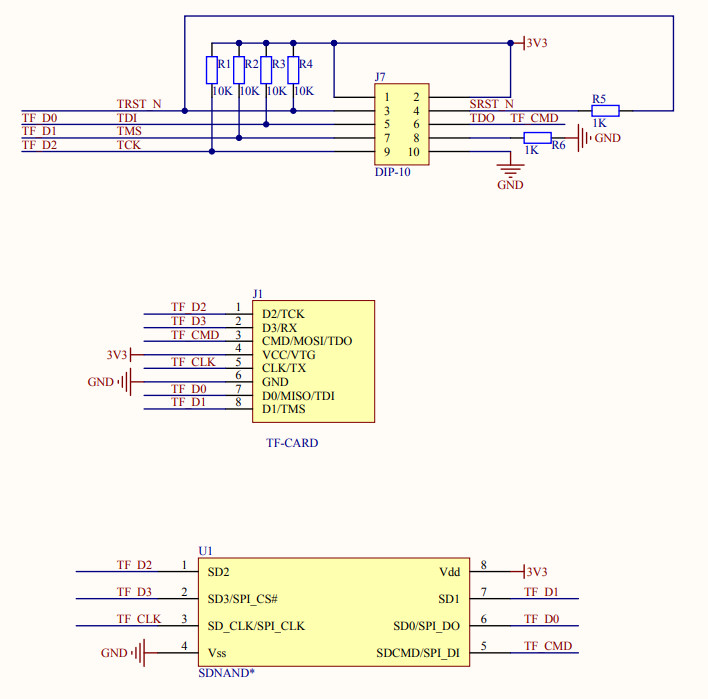
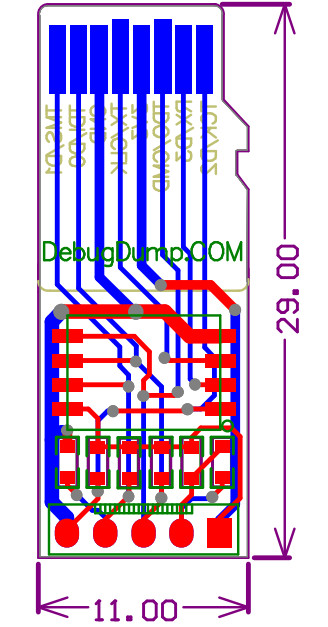
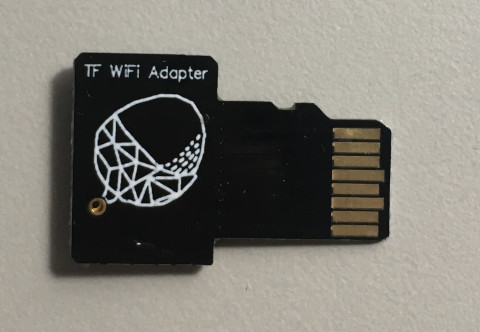
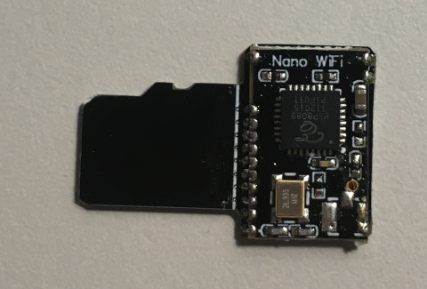
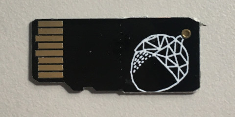
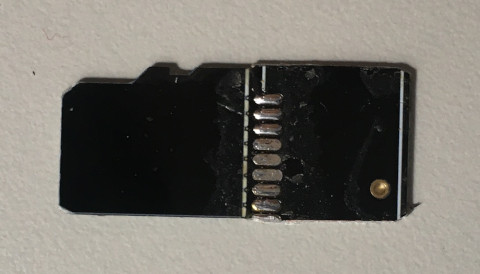
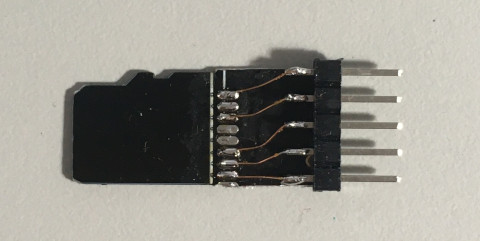
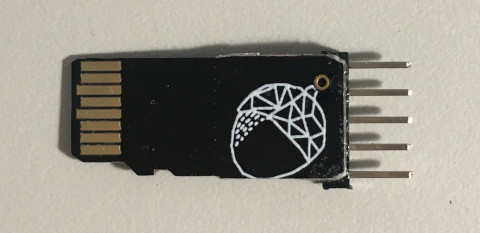
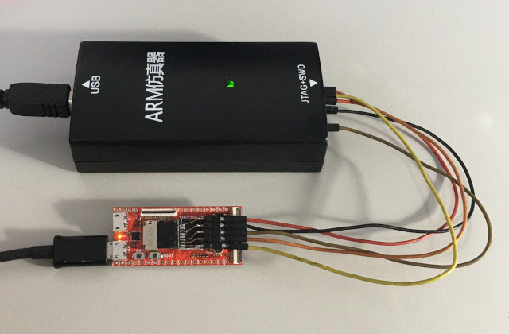
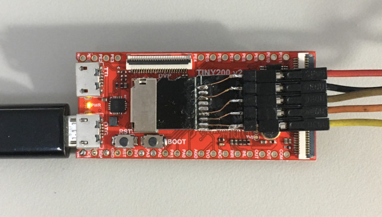
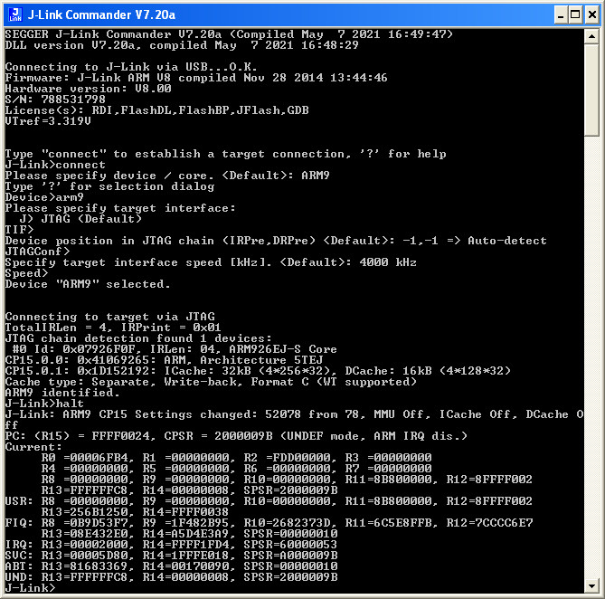